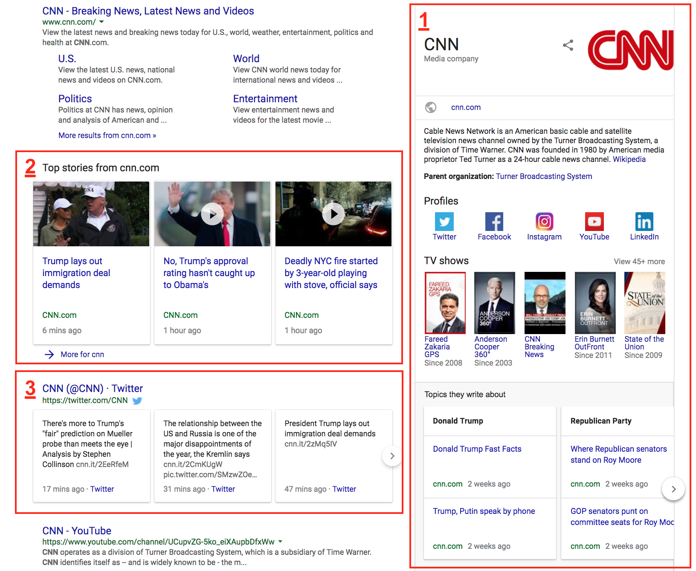
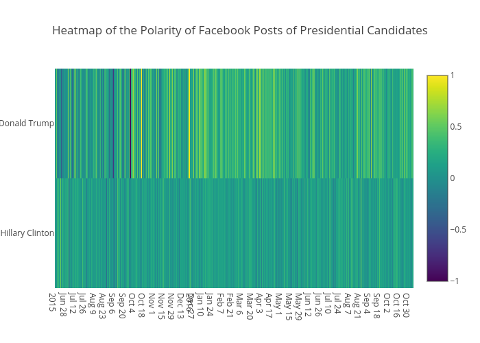

Projects

Monitoring Google Search Engine Results Pages of Newspapers
Using Python's selenium, beautiful soup, and pandas libraries collect, download, and analyze 7200 local news sites.
View ProjectScraping Virginia Election Results
A script used to collect election results as they are returned on election night and produce a CSV file useful for the political scientists in MIT Election Data and Science Lab.
View Project
Topic Modeling Islamophobic Tweets
In the wake of a terrorist attack in England, I used LDA topic modeling to see changes in a rise of Islamophobic rhetoric on Twitter after a terrorist attack.
View Project

Sentiment Analysis of Hillary Clinton and Donald Trump's 2016 Facebook feed
Using the Facebook API, textblob, and plotly libraries I created a visualization of the differing tones of the two primary U.S. presidential candidates.
View Project